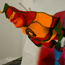

Custom Shading
Introduction
This example shows how to load custom vertex and fragment shaders in order to achieve special effects.
Learn
- XML syntax of shader material definitions
- Loading shader material and applying it to a geometry
Key methods
- IMetaioSDK::loadShaderMaterials()
- IGeometry::setShaderMaterial()
- IGeometry::setShaderMaterialOnSetConstantsCallback()
- IShaderMaterialOnSetConstantsCallback
Explanations
Please read the full article explaining this tutorial: